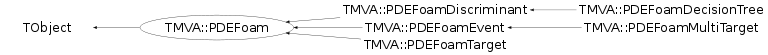

class TMVA::PDEFoam: public TObject
Implementation of PDEFoam The PDEFoam method is an extension of the PDERS method, which uses self-adapting binning to divide the multi-dimensional phase space in a finite number of hyper-rectangles (boxes). For a given number of boxes, the binning algorithm adjusts the size and position of the boxes inside the multidimensional phase space, minimizing the variance of the signal and background densities inside the boxes. The binned density information is stored in binary trees, allowing for a very fast and memory-efficient classification of events. The implementation of the PDEFoam is based on the monte-carlo integration package TFoam included in the analysis package ROOT. The class TMVA::PDEFoam defines the default interface for the PDEFoam variants: - PDEFoamEvent - PDEFoamDiscriminant - PDEFoamTarget - PDEFoamMultiTarget - PDEFoamDecisionTree Per default PDEFoam stores in the cells the number of events (event weights) and therefore acts as an event density estimator. However, the above listed derived classes override this behaviour to implement certain PDEFoam variations. In order to use PDEFoam the user has to set the density estimator of the type TMVA::PDEFoamDensityBase, which is used to during the foam build-up. The default PDEFoam should be used with PDEFoamEventDensity.
Function Members (Methods)
public:
| virtual | ~PDEFoam() |
| void | TObject::AbstractMethod(const char* method) const |
| void | AddVariableName(const char* s) |
| void | AddVariableName(TObjString* s) |
| virtual void | TObject::AppendPad(Option_t* option = "") |
| virtual void | TObject::Browse(TBrowser* b) |
| void | CheckAll(Int_t) |
| static TClass* | Class() |
| virtual const char* | TObject::ClassName() const |
| virtual void | TObject::Clear(Option_t* = "") |
| virtual TObject* | TObject::Clone(const char* newname = "") const |
| virtual Int_t | TObject::Compare(const TObject* obj) const |
| virtual void | TObject::Copy(TObject& object) const |
| void | Create() |
| virtual void | TObject::Delete(Option_t* option = "")MENU |
| void | DeleteBinarySearchTree() |
| virtual Int_t | TObject::DistancetoPrimitive(Int_t px, Int_t py) |
| virtual void | TObject::Draw(Option_t* option = "") |
| TH1D* | Draw1Dim(TMVA::ECellValue cell_value, Int_t nbin, TMVA::PDEFoamKernelBase* kernel = NULL) |
| virtual void | TObject::DrawClass() constMENU |
| virtual TObject* | TObject::DrawClone(Option_t* option = "") constMENU |
| virtual void | TObject::Dump() constMENU |
| virtual void | TObject::Error(const char* method, const char* msgfmt) const |
| virtual void | TObject::Execute(const char* method, const char* params, Int_t* error = 0) |
| virtual void | TObject::Execute(TMethod* method, TObjArray* params, Int_t* error = 0) |
| virtual void | TObject::ExecuteEvent(Int_t event, Int_t px, Int_t py) |
| virtual void | TObject::Fatal(const char* method, const char* msgfmt) const |
| void | FillBinarySearchTree(const TMVA::Event* ev) |
| virtual void | FillFoamCells(const TMVA::Event* ev, Float_t wt) |
| virtual void | Finalize() |
| virtual TObject* | TObject::FindObject(const char* name) const |
| virtual TObject* | TObject::FindObject(const TObject* obj) const |
| virtual vector<Float_t> | GetCellValue(const map<Int_t,Float_t>& xvec, TMVA::ECellValue cv) |
| virtual Float_t | GetCellValue(const TMVA::PDEFoamCell* cell, TMVA::ECellValue cv) |
| virtual Float_t | GetCellValue(const vector<Float_t>& xvec, TMVA::ECellValue cv, TMVA::PDEFoamKernelBase*) |
| virtual Option_t* | TObject::GetDrawOption() const |
| static Long_t | TObject::GetDtorOnly() |
| TString | GetFoamName() const |
| virtual const char* | TObject::GetIconName() const |
| UInt_t | GetMaxDepth() const |
| UInt_t | GetNActiveCells() const |
| virtual const char* | TObject::GetName() const |
| UInt_t | GetNCells() const |
| UInt_t | GetNInActiveCells() const |
| UInt_t | GetNmin() |
| virtual char* | TObject::GetObjectInfo(Int_t px, Int_t py) const |
| static Bool_t | TObject::GetObjectStat() |
| virtual Option_t* | TObject::GetOption() const |
| TMVA::PDEFoamCell* | GetRootCell() const |
| virtual const char* | TObject::GetTitle() const |
| Int_t | GetTotDim() const |
| virtual UInt_t | TObject::GetUniqueID() const |
| TObjString* | GetVariableName(Int_t idx) |
| Double_t | GetXmax(Int_t idim) const |
| Double_t | GetXmin(Int_t idim) const |
| virtual Bool_t | TObject::HandleTimer(TTimer* timer) |
| virtual ULong_t | TObject::Hash() const |
| virtual void | TObject::Info(const char* method, const char* msgfmt) const |
| virtual Bool_t | TObject::InheritsFrom(const char* classname) const |
| virtual Bool_t | TObject::InheritsFrom(const TClass* cl) const |
| void | Initialize() |
| virtual void | TObject::Inspect() constMENU |
| void | TObject::InvertBit(UInt_t f) |
| virtual TClass* | IsA() const |
| virtual Bool_t | TObject::IsEqual(const TObject* obj) const |
| virtual Bool_t | TObject::IsFolder() const |
| Bool_t | TObject::IsOnHeap() const |
| virtual Bool_t | TObject::IsSortable() const |
| Bool_t | TObject::IsZombie() const |
| TMVA::MsgLogger& | Log() const |
| virtual void | TObject::ls(Option_t* option = "") const |
| void | TObject::MayNotUse(const char* method) const |
| virtual Bool_t | TObject::Notify() |
| void | TObject::Obsolete(const char* method, const char* asOfVers, const char* removedFromVers) const |
| static void | TObject::operator delete(void* ptr) |
| static void | TObject::operator delete(void* ptr, void* vp) |
| static void | TObject::operator delete[](void* ptr) |
| static void | TObject::operator delete[](void* ptr, void* vp) |
| void* | TObject::operator new(size_t sz) |
| void* | TObject::operator new(size_t sz, void* vp) |
| void* | TObject::operator new[](size_t sz) |
| void* | TObject::operator new[](size_t sz, void* vp) |
| TMVA::PDEFoam& | operator=(const TMVA::PDEFoam&) |
| virtual void | TObject::Paint(Option_t* option = "") |
| TMVA::PDEFoam | PDEFoam() |
| TMVA::PDEFoam | PDEFoam(const TString&) |
| virtual void | TObject::Pop() |
| virtual void | TObject::Print(Option_t* option = "") const |
| void | PrintCell(Long_t iCell = 0) |
| void | PrintCells() |
| virtual TH2D* | Project2(Int_t idim1, Int_t idim2, TMVA::ECellValue cell_value = kValue, TMVA::PDEFoamKernelBase* kernel = NULL, UInt_t maxbins = 50) |
| virtual Int_t | TObject::Read(const char* name) |
| virtual void | TObject::RecursiveRemove(TObject* obj) |
| void | TObject::ResetBit(UInt_t f) |
| void | ResetCellElements() |
| void | RootPlot2dim(const TString& filename, TString opt, Bool_t CreateCanvas = kTRUE, Bool_t colors = kTRUE) |
| virtual void | TObject::SaveAs(const char* filename = "", Option_t* option = "") constMENU |
| virtual void | TObject::SavePrimitive(ostream& out, Option_t* option = "") |
| void | TObject::SetBit(UInt_t f) |
| void | TObject::SetBit(UInt_t f, Bool_t set) |
| void | SetDensity(TMVA::PDEFoamDensityBase* dens) |
| void | SetDim(Int_t kDim) |
| virtual void | TObject::SetDrawOption(Option_t* option = "")MENU |
| static void | TObject::SetDtorOnly(void* obj) |
| void | SetEvPerBin(Int_t EvPerBin) |
| void | SetInhiDiv(Int_t, Int_t) |
| void | SetMaxDepth(UInt_t maxdepth) |
| void | SetnBin(Int_t nBin) |
| void | SetnCells(Long_t nCells) |
| void | SetNmin(UInt_t val) |
| void | SetnSampl(Long_t nSampl) |
| static void | TObject::SetObjectStat(Bool_t stat) |
| virtual void | TObject::SetUniqueID(UInt_t uid) |
| void | SetXmax(Int_t idim, Double_t wmax) |
| void | SetXmin(Int_t idim, Double_t wmin) |
| virtual void | ShowMembers(TMemberInspector& insp) |
| virtual void | Streamer(TBuffer& b) |
| void | StreamerNVirtual(TBuffer& b) |
| virtual void | TObject::SysError(const char* method, const char* msgfmt) const |
| Bool_t | TObject::TestBit(UInt_t f) const |
| Int_t | TObject::TestBits(UInt_t f) const |
| virtual void | TObject::UseCurrentStyle() |
| vector<Float_t> | VarTransform(const vector<Float_t>& invec) const |
| Float_t | VarTransform(Int_t idim, Float_t x) const |
| vector<Float_t> | VarTransformInvers(const vector<Float_t>& invec) const |
| Float_t | VarTransformInvers(Int_t idim, Float_t x) const |
| virtual void | TObject::Warning(const char* method, const char* msgfmt) const |
| virtual Int_t | TObject::Write(const char* name = 0, Int_t option = 0, Int_t bufsize = 0) |
| virtual Int_t | TObject::Write(const char* name = 0, Int_t option = 0, Int_t bufsize = 0) const |
protected:
Data Members
public:
| enum TObject::EStatusBits { | kCanDelete | |
| kMustCleanup | ||
| kObjInCanvas | ||
| kIsReferenced | ||
| kHasUUID | ||
| kCannotPick | ||
| kNoContextMenu | ||
| kInvalidObject | ||
| }; | ||
| enum TObject::[unnamed] { | kIsOnHeap | |
| kNotDeleted | ||
| kZombie | ||
| kBitMask | ||
| kSingleKey | ||
| kOverwrite | ||
| kWriteDelete | ||
| }; |
protected:
| Double_t* | fAlpha | [fDim] Internal parameters of the hyperrectangle |
| TMVA::PDEFoamCell** | fCells | [fNCells] Array of ALL cells |
| TMVA::EDTSeparation | fDTSeparation | BACKWARDS COMPATIBILITY: split cells according to decision tree logic |
| Int_t | fDim | Dimension of the integration/simulation space |
| TMVA::PDEFoamDensityBase* | fDistr | ! distribution of training events |
| Int_t | fEvPerBin | Maximum number of effective (wt=1) events per bin |
| Bool_t | fFillFoamWithOrigWeights | BACKWARDS COMPATIBILITY: fill the foam with boost or orig. weights |
| TMVA::EFoamType | fFoamType | BACKWARDS COMPATIBILITY: type of foam |
| TObjArray* | fHistEdg | Histograms of wt, one for each cell edge |
| Int_t* | fInhiDiv | ! [fDim] Flags for inhibiting cell division |
| Int_t | fLastCe | Index of the last cell |
| TMVA::MsgLogger* | fLogger | ! message logger |
| Int_t* | fMaskDiv | ! [fDim] Dynamic Mask for cell division |
| UInt_t | fMaxDepth | maximum depth of cell tree |
| Int_t | fNBin | No. of bins in the edge histogram for cell MC exploration |
| Int_t | fNCells | Maximum number of cells |
| UInt_t | fNElements | BACKWARDS COMPATIBILITY: number of variables in every cell |
| Int_t | fNSampl | No. of MC events, when dividing (exploring) cell |
| TString | fName | Name of a given instance of the FOAM class |
| UInt_t | fNmin | minimal number of events in cell to split cell |
| Int_t | fNoAct | Number of active cells |
| Bool_t | fPeekMax | BACKWARDS COMPATIBILITY: peek up cell with max. driver integral for split |
| TRandom3* | fPseRan | Pointer to user-defined generator of pseudorandom numbers |
| Double_t* | fRvec | [fDim] random number vector from r.n. generator fDim+1 maximum elements |
| TMVA::Timer* | fTimer | ! timer for graphical output |
| TObjArray* | fVariableNames | collection of all variable names |
| Float_t | fVolFrac | BACKWARDS COMPATIBILITY: volume fraction (with respect to total phase space |
| Double_t* | fXmax | [fDim] maximum for variable transform |
| Double_t* | fXmin | [fDim] minimum for variable transform |
Class Charts
{kind=link}
{kind=link}
{kind=link}
{kind=link}

Function documentation
void Create()
Basic initialization of FOAM invoked by the user. IMPORTANT: Random number generator and the distribution object has to be provided using SetPseRan and SetRho prior to invoking this initializator! After the foam is grown, space for 2 variables is reserved in every cell. They are used for filling the foam cells.
void InitCells()
Internal subprogram used by Create. It initializes "root part" of the FOAM of the tree of cells.
Int_t CellFill(Int_t , TMVA::PDEFoamCell* )
Internal subprogram used by Create. It initializes content of the newly allocated active cell.
void Explore(TMVA::PDEFoamCell* Cell)
Internal subprogram used by Create. It explores newly defined cell with help of special short MC sampling. As a result, estimates of kTRUE and drive volume is defined/determined Average and dispersion of the weight distribution will is found along each edge and the best edge (minimum dispersion, best maximum weight) is memorized for future use. The optimal division point for eventual future cell division is determined/recorded. Recorded are also minimum and maximum weight etc. The volume estimate in all (inactive) parent cells is updated. Note that links to parents and initial volume = 1/2 parent has to be already defined prior to calling this routine. If fNmin > 0 then the total number of (training) events found in the cell during the exploration is stored in the cell. This information is used withing PeekMax() to avoid splitting cells which contain less than fNmin events.
Long_t PeekMax()
Internal subprogram used by Create. It finds cell with maximal driver integral for the purpose of the division. This function is overridden by the PDEFoam Class to apply cuts on the number of events in the cell (fNmin) and the cell tree depth (GetMaxDepth() > 0) during cell buildup.
Int_t Divide(TMVA::PDEFoamCell* )
Internal subrogram used by Create. It divides cell iCell into two daughter cells. The iCell is retained and tagged as inactive, daughter cells are appended at the end of the buffer. New vertex is added to list of vertices. List of active cells is updated, iCell removed, two daughters added and their properties set with help of MC sampling (PDEFoam_Explore) Returns Code RC=-1 of buffer limit is reached, fLastCe=fnBuf.
Double_t Eval(Double_t* xRand, Double_t& event_density)
Internal subprogram. Evaluates (training) distribution.
void Grow()
void SetInhiDiv(Int_t , Int_t )
This can be called before Create, after setting kDim It defines which variables are excluded in the process of the cell division. For example 'FoamX->SetInhiDiv(1, 1);' inhibits division of y-variable.
void CheckAll(Int_t )
User utility, miscellaneous and debug. Checks all pointers in the tree of cells. This is useful autodiagnostic. level=0, no printout, failures causes STOP level=1, printout, failures lead to WARNINGS only
void PrintCell(Long_t iCell = 0)
Prints geometry of and elements of 'iCell', as well as relations to parent and daughter cells.
void FillFoamCells(const TMVA::Event* ev, Float_t wt)
This function fills a weight 'wt' into the PDEFoam cell, which corresponds to the given event 'ev'. Per default cell element 0 is filled with the weight 'wt', and cell element 1 is filled with the squared weight. This function can be overridden by a subclass in order to change the values stored in the foam cells.
Float_t GetCellValue(const vector<Float_t>& xvec, TMVA::ECellValue cv, TMVA::PDEFoamKernelBase* )
This function finds the cell, which corresponds to the given untransformed event vector 'xvec' and return its value, which is given by the parameter 'cv'. If kernel != NULL, then PDEFoamKernelBase::Estimate() is called on the transformed event variables. Parameters: - xvec - event vector (untransformed, [fXmin,fXmax]) - cv - the cell value to return - kernel - PDEFoam kernel estimator. If NULL is given, than the pure cell value is returned Return: The cell value, corresponding to 'xvec', estimated by the given kernel.
std::vector<Float_t> GetCellValue( const std::map<Int_t,Float_t>& xvec, ECellValue cv )
This function finds all cells, which corresponds to the given (incomplete) untransformed event vector 'xvec' and returns the cell values, according to the parameter 'cv'. Parameters: - xvec - map for the untransformed vector. The key (Int_t) is the dimension, and the value (Float_t) is the event coordinate. Note that not all coordinates have to be specified. - cv - cell values to return Return: cell values from all cells that were found
TMVA::PDEFoamCell* FindCell(const vector<Float_t>& ) const
Find cell that contains 'xvec' (in foam coordinates [0,1]). Loop to find cell that contains 'xvec' starting at root cell, and traversing binary tree to find the cell quickly. Note, that if 'xvec' lies outside the foam, the cell which is nearest to 'xvec' is returned. (The returned pointer should never be NULL.) Parameters: - xvec - event vector (in foam coordinates [0,1]) Return: PDEFoam cell corresponding to 'xvec'
void FindCells(const map<Int_t,Float_t>& , TMVA::PDEFoamCell* , vector<TMVA::PDEFoamCell*,allocator<TMVA::PDEFoamCell*> >& ) const
This is a helper function for std::vector<PDEFoamCell*> FindCells(...) and a generalisation of PDEFoamCell* FindCell(). It saves in 'cells' all cells, which contain the coordinates specifies in 'txvec'. Note, that not all coordinates have to be specified in 'txvec'. Parameters: - txvec - event vector in foam coordinates [0,1]. The key is the dimension and the value is the event coordinate. Note, that not all coordinates have to be specified. - cell - cell to start searching with (usually root cell fCells[0]) - cells - list of cells that were found
std::vector<TMVA::PDEFoamCell*> FindCells(const std::vector<Float_t> &txvec)
Find all cells, that contain txvec. This function can be used, when the dimension of the foam is greater than the dimension of txvec. E.g. this is the case for multi-target regression. Parameters: - txvec - event vector of variables, transformed into foam coordinates [0,1]. The size of txvec can be smaller than the dimension of the foam. Return value: - vector of cells, that fit txvec
std::vector<TMVA::PDEFoamCell*> FindCells(const std::map<Int_t, Float_t> &txvec)
Find all cells, that contain the coordinates specified in txvec. The key in 'txvec' is the dimension, and the corresponding value is the coordinate. Note, that not all coordinates have to be specified in txvec. Parameters: - txvec - map of coordinates (transformed into foam coordinates [0,1]) Return value: - vector of cells, that fit txvec
TH1D* Draw1Dim(TMVA::ECellValue cell_value, Int_t nbin, TMVA::PDEFoamKernelBase* kernel = NULL)
Draws 1-dimensional foam (= histogram) Parameters: - cell_value - the cell value to draw - nbin - number of bins of result histogram - kernel - a PDEFoam kernel.
TH2D* Project2(Int_t idim1, Int_t idim2, TMVA::ECellValue cell_value = kValue, TMVA::PDEFoamKernelBase* kernel = NULL, UInt_t maxbins = 50)
Project foam variable idim1 and variable idim2 to histogram. Parameters: - idim1, idim2 - dimensions to project to - cell_value - the cell value to draw - kernel - a PDEFoam kernel (optional). If NULL is given, the kernel is ignored and the pure cell values are plotted. - nbin - number of bins in x and y direction of result histogram (optional, default is 50). Returns: a 2-dimensional histogram
Float_t GetCellValue(const PDEFoamCell* cell, ECellValue cv)
Returns the cell value of 'cell' corresponding to the given option 'cv'. This function should be overridden by the subclass in order to specify which cell elements to return for a given cell value 'cv'. By default kValue returns cell element 0, and kValueError returns cell element 1.
Double_t GetCellElement(const TMVA::PDEFoamCell* cell, UInt_t i) const
Returns cell element i of cell 'cell'. If the cell has no
elements or the index 'i' is out of range, than 0 is returned.
void SetCellElement(TMVA::PDEFoamCell* cell, UInt_t i, Double_t value)
Set cell element i of cell to value. If the cell element i does not exist, it is created.
void OutputGrow(Bool_t finished = false)
void RootPlot2dim(const TString& filename, TString opt, Bool_t CreateCanvas = kTRUE, Bool_t colors = kTRUE)
Debugging tool which plots the cells of a 2-dimensional PDEFoam as rectangles in C++ format readable for ROOT. Parameters: - filename - filename of ouput root macro - opt - cell_value, rms, rms_ov_mean If cell_value is set, the following values will be filled into the result histogram: - number of events - in case of classification with 2 separate foams or multi-target regression - discriminator - in case of classification with one unified foam - target - in case of mono-target regression If none of {cell_value, rms, rms_ov_mean} is given, the cells will not be filled. If 'opt' contains the string 'cellnumber', the index of each cell is draw in addition. - CreateCanvas - whether to create a new canvas or not - colors - whether to fill cells with colors or shades of grey Example: The following commands load a mono-target regression foam from file 'foam.root' and create a ROOT macro 'output.C', which draws all PDEFoam cells with little boxes. The latter are filled with colors according to the target value stored in the cell. Also the cell number is drawn. TFile file("foam.root"); TMVA::PDEFoam *foam = (TMVA::PDEFoam*) gDirectory->Get("MonoTargetRegressionFoam"); foam->RootPlot2dim("output.C","cell_value,cellnumber"); gROOT->Macro("output.C");
void FillBinarySearchTree(const TMVA::Event* ev)
Insert event to internal foam's density estimator PDEFoamDensityBase.
void DeleteBinarySearchTree()
Delete the foam's density estimator, which contains the binary search tree.
void AddVariableName(const char* s)
Getters and Setters for variable names
{ AddVariableName(new TObjString(s)); }